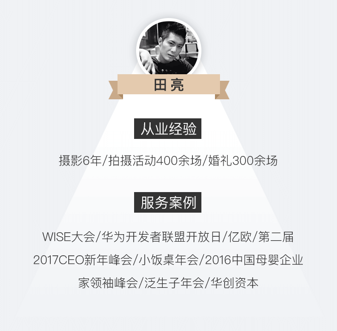

极客公园GIF7大会
2017年01月13日~2017年01月15日
09：30~16：30
中国·北京751D·PARK
极客公园
现场直击
极客公园创新大会从2013年起，每年举办一届。极客公园创新大会已进入第七年，GIF2017共为期三天，这可能是每年最不能错过的、真正意义上的世界级和国际化的“科技会议”。2017年极客公园创新大会于2017年1月13-15日在751D·Park 北京时尚设计广场举行。极客公园创始人张鹏携数位科技大咖，百度李彦宏、小米科技雷军、微软全球执行副总裁沈向洋、搜狗王小川、锤子科技罗永浩等人作重要演讲。同时，来自Google Clould （谷歌云）、Google Assistant （谷歌助手）、Google Daydream（谷歌白日梦VR平台）产品团队的代表参加此次大会。

2017极客公园创新大会是一次全球科技精英的对撞，是一个关于前沿创新和技术哲学的终极讨论。此次大会共分为产品力论坛、2016极客盘点、探索力论坛、创造力论坛、改变力论坛和影响力论坛为期三天的论坛讨论。
谱时方案
前期准备:
2017年极客公园创新大会作为一场大型重要会议，谱时会做一些相应的拍摄方面的准备，来突出现场宏大的场面以及会议的重点内容。比如为了突出大罐大场景的鱼眼镜头等。并对现场机位的做出相应调度，保证全方位无死角的展现会议全程。例如，一个固定机位扫全场以拍到嘉宾和主讲内容的全景：
一个前场游机负责抓拍嘉宾特写:
一个全场游机负责抓拍各种精彩瞬间：
在会议开始前，工作人员与摄影师提前2小时到达会场，提前适应场地，按照会议场所布置提前走场，实地考察会场的大小、灯光情况、主宾位置、自己的机位等；并安排一个机位做预留，应对临时情况，做到细致全面。适应场地确定机位同时，应距周边设备有一定距离，避免震动引发画面跳动，保证每场直播的成功拍摄。同时，考虑到现场有近2000名观众，和79罐场地所带来的网络传输信号不稳定情况。谱时工作人员准备了网络专线和移动信号两手准备，以确保活动中图片同传的万无一失。
直播中，修图师全面配合摄影师，及时修图选图传图，并使用谱时图片现场相册功能，将每一位重量级嘉宾的照片按照活动顺序对应并单独呈现，保证专业化高质量成片，全面实现谱时图片现场3分钟【黑科技】。
本次活动谱时摄影师:
定制化直播页面:
活动正式开始的三天前，谱时设计师都会根据主办方的品牌定位和视觉，活动的类型和调性开始精心准备直播页面的定制工作。
直播页面按3天的场次匹配共设16个直播现场，提取要点进行直播。同时也将主办方GIF17 的logo黄色元素恰当地融入到轮播图中，以得到更多的品牌露出。页面的品牌介绍区域，有谱时设计师精心为嘉宾制作的个性化形象展示。设计师将嘉宾形象结合几何图形，做出空间扭曲的效果，让原本枯燥的头像展示区更多一些科技感。
数据盘点
活动相关数据
活动时间:2017年1月13-15日
总分享量：38732
用户分享带来的曝光量：38732
图片相关数据:
1203
现场照片
1203
现场照片
1203
现场照片
最受线上欢迎的照片
被媒体使用的最多的照片
评价体验
感谢谱时把我们拍摄的如此美丽！这次创新大会始于科技，而不止于科技，大咖很多，精彩的内容也不容错过！谱时的摄影师非常专业。直播页面也非常棒，把我们的活动实时传播给未到场的朋友！科技思想的碰撞，不仅是我和你的科技交流，更是和志同道合的女性朋友、男性朋友，不同年龄、不同背景的人一起探索世界 ！加入 GIF2017，创造新可能！希望今后可以和谱时有更多的合作！
—— 极客公园主办方
可以和这样一群精英面对面接触，有各种各样的拍摄需求，虽然累但是真是痛并快乐着！
—— 极客公园摄影师
没想到这么快！刚刚还在听，然后通过扫描二维码就已经可以看到现场直播的情况了，可以从图片直播里下载高清图片发朋友圈，比自己拍得好多了哈哈，非常全面，很赞！
—— 极客公园观众
因为有事没能到现场看，但是通过朋友圈分享的谱时页面也可以直观看到现场图片，不在场也能身临其境，很棒！
—— 极客公园网友